Đang cập nhật
Nội dung trang này chưa được cập nhật cho Godot
4.7
và có thể đã lỗi thời. Nếu bạn biết cách cải thiện trang này hoặc xác nhận
được rằng nó vẫn đúng, hãy gửi một pull request (bản tiếng Anh).
Bộ xương 2D
Giới thiệu
Khi làm việc với 3D, biến dạng theo bộ xương rất phổ biến cho nhân vật và sinh vật, và hầu hết các ứng dụng dựng hình 3D đều hỗ trợ. Với 2D, vì chức năng này không được dùng thường xuyên, rất khó tìm được phần mềm phổ biến dành cho việc này.
Một lựa chọn là tạo hoạt ảnh trong phần mềm bên thứ ba như Spine hoặc Dragonbones. Chức năng này cũng được hỗ trợ sẵn.
Tại sao bạn lại muốn làm hoạt ảnh xương trực tiếp trong Godot? Câu trả lời là vì nó có nhiều ưu điểm:
Tích hợp tốt hơn với engine, nên đỡ phiền phức khi import và chỉnh sửa từ công cụ bên ngoài.
Có thể điều khiển hệ thống hạt, shader, âm thanh, gọi script, màu sắc, độ trong suốt, v.v. trong hoạt ảnh.
Hệ thống xương tích hợp sẵn trong Godot rất hiệu quả và được thiết kế để đạt hiệu năng cao.
Vì vậy, bài hướng dẫn sau sẽ giải thích về biến dạng xương 2D.
Thiết lập
Xem thêm
Trước khi bắt đầu, chúng tôi khuyên bạn nên xem qua bài hướng dẫn Hoạt ảnh cắt ghép (cutout) để có hiểu biết chung về cách làm hoạt ảnh trong Godot.
Trong bài hướng dẫn này, chúng ta sẽ dùng một ảnh duy nhất để dựng nhân vật. Tải ảnh từ gBot_pieces.png hoặc lưu ảnh bên dưới.


Bạn cũng nên tải ảnh nhân vật hoàn chỉnh gBot_complete.png để làm tham chiếu khi ghép các mảnh lại với nhau.


Tạo các đa giác
Tạo một scene mới cho mô hình của bạn (nếu đó sẽ là nhân vật có hoạt ảnh, bạn có thể muốn dùng CharacterBody2D). Để dễ sử dụng, một node 2D rỗng được tạo làm gốc cho các polygon.
Bắt đầu với một node Polygon2D. Hiện chưa cần đặt nó ở đâu trong scene, nên chỉ cần tạo nó như sau:

Chọn nó và gán texture chứa các mảnh nhân vật mà bạn đã tải về trước đó:
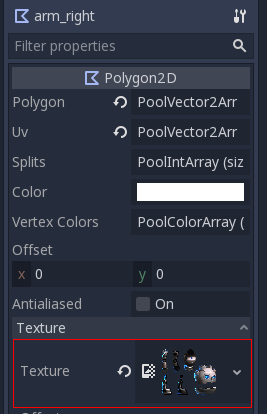
Không nên vẽ polygon trực tiếp. Thay vào đó, hãy mở hộp thoại "UV" cho polygon:

Chuyển sang chế độ Points, chọn bút chì và vẽ một polygon bao quanh mảnh mong muốn:

Nhân bản node polygon và đặt cho nó một cái tên phù hợp. Sau đó, vào lại hộp thoại "UV" và thay polygon cũ bằng một polygon khác ở mảnh mới mong muốn.
Khi bạn nhân bản node và mảnh tiếp theo có hình dạng tương tự, bạn có thể chỉnh sửa polygon trước đó thay vì vẽ cái mới.
Sau khi di chuyển polygon, hãy nhớ cập nhật UV bằng cách chọn Edit > Copy Polygon to UV trong Polygon 2D UV Editor.

Tiếp tục làm vậy cho đến khi bạn đã ánh xạ hết các mảnh.

Bạn sẽ nhận thấy các mảnh của node xuất hiện theo cùng bố cục như trong texture gốc. Đó là vì theo mặc định, khi bạn vẽ một polygon, UV và các điểm là như nhau.
Sắp xếp lại các mảnh và dựng nhân vật. Việc này sẽ khá nhanh. Không cần thay đổi pivot, nên đừng bận tâm đảm bảo pivot xoay của từng mảnh là chính xác; bạn có thể để nguyên chúng lúc này.
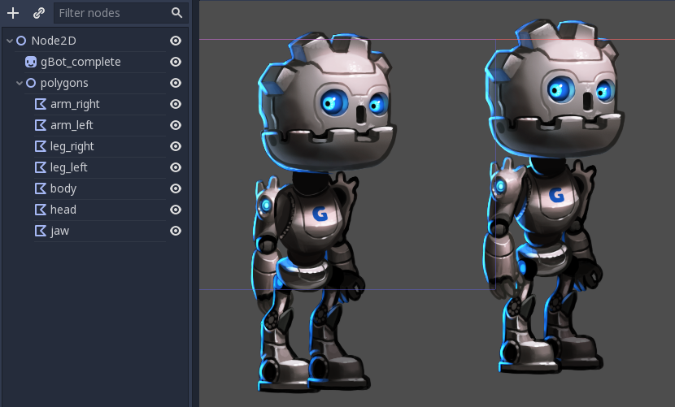
À, thứ tự hiển thị của các mảnh vẫn chưa đúng, vì một số mảnh đang che sai mảnh khác. Hãy sắp xếp lại thứ tự các node để khắc phục:
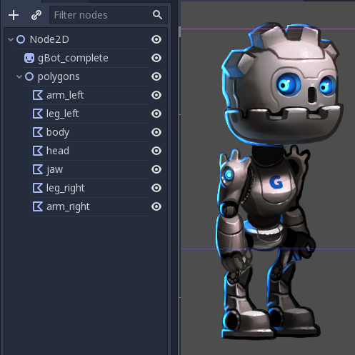
Vậy là xong! Chắc chắn dễ hơn nhiều so với bài hướng dẫn cutout.
Tạo bộ xương
Tạo một node Skeleton2D làm con của node gốc. Đây sẽ là nền tảng của bộ xương:
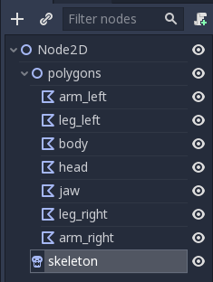
Tạo một node Bone2D làm con của skeleton. Đặt nó ở hông (bộ xương thường bắt đầu từ đây). Xương sẽ hướng sang phải, nhưng hiện tại bạn có thể bỏ qua điều này.

Tiếp tục tạo các xương theo phân cấp và đặt tên cho chúng tương ứng.
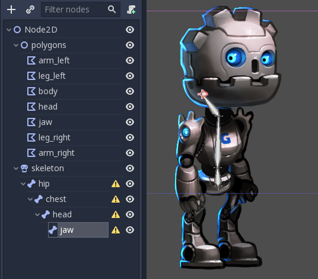
Ở cuối chuỗi này sẽ có một node jaw. Một lần nữa, nó rất ngắn và hướng sang phải. Điều này là bình thường với các xương không có con. Độ dài của các xương đầu mút có thể được thay đổi bằng một thuộc tính trong inspector:
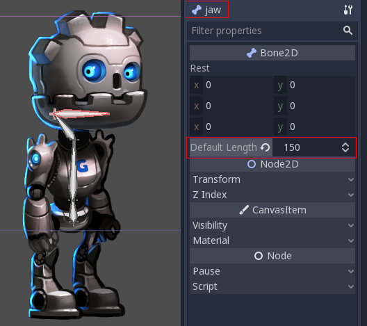
Trong trường hợp này, ta không cần xoay xương (tình cờ là quai hàm trong sprite hướng sang phải), nhưng nếu cần, bạn cứ thoải mái xoay. Một lần nữa, việc này chỉ thực sự cần cho các xương đầu mút, vì các node có con thường không cần độ dài hay góc xoay cụ thể.
Tiếp tục và dựng toàn bộ bộ xương:
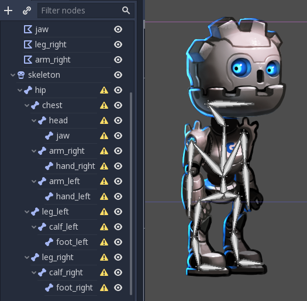
Bạn sẽ nhận thấy tất cả các xương đều báo cảnh báo về việc thiếu rest pose. Rest pose là tư thế mặc định của một bộ xương, bạn có thể quay lại tư thế này bất cứ lúc nào (rất tiện khi làm hoạt ảnh). Để đặt rest pose, nhấp vào node skeleton trong cây scene, sau đó nhấp nút trên thanh công cụ và chọn Overwrite Rest Pose từ menu thả xuống.

Các cảnh báo sẽ biến mất. Nếu bạn sửa đổi bộ xương (thêm/xóa xương), bạn sẽ cần đặt lại rest pose.
Biến dạng các polygon
Chọn các polygon đã tạo trước đó và gán node skeleton cho thuộc tính Skeleton của chúng. Điều này đảm bảo chúng có thể được bộ xương làm biến dạng về sau.

Nhấp vào thuộc tính được đánh dấu ở trên và chọn node skeleton:
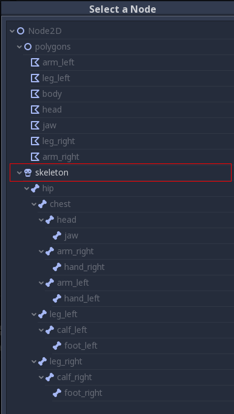
Một lần nữa, mở UV editor cho polygon và vào mục Bones.
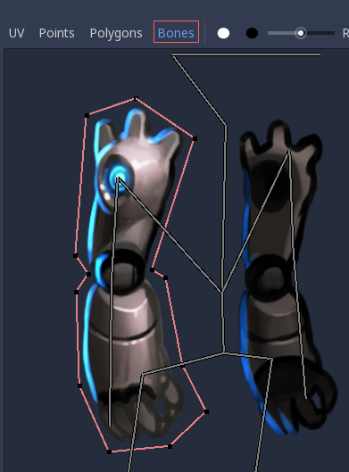
Bạn vẫn chưa thể vẽ trọng số (weight). Để làm vậy, bạn cần đồng bộ danh sách xương từ skeleton với polygon. Bước này chỉ làm một lần và thủ công (trừ khi bạn sửa đổi skeleton bằng cách thêm/xóa/đổi tên xương). Nó đảm bảo thông tin rigging được giữ trong polygon, ngay cả khi node skeleton vô tình bị mất hoặc skeleton bị sửa đổi. Nhấn nút "Sync Bones to Polygon" để đồng bộ danh sách.
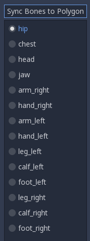
Danh sách xương sẽ tự động xuất hiện. Theo mặc định, polygon của bạn chưa được gán trọng số cho xương nào. Chọn các xương bạn muốn gán trọng số và vẽ lên chúng:
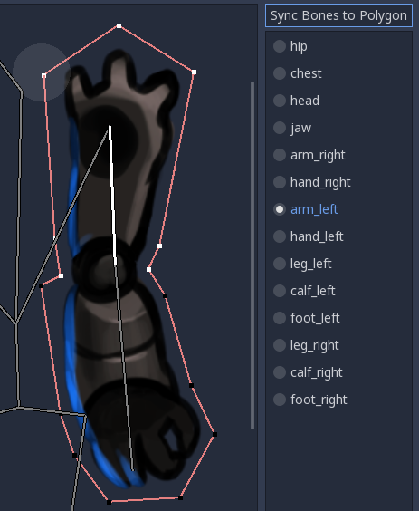
Các điểm màu trắng được gán trọng số tối đa, còn các điểm màu đen không chịu ảnh hưởng của xương. Nếu cùng một điểm được vẽ màu trắng cho nhiều xương, mức ảnh hưởng sẽ được phân bổ giữa các xương đó (nên thường không cần dùng nhiều sắc độ trung gian trừ khi bạn muốn tinh chỉnh hiệu ứng uốn cong).
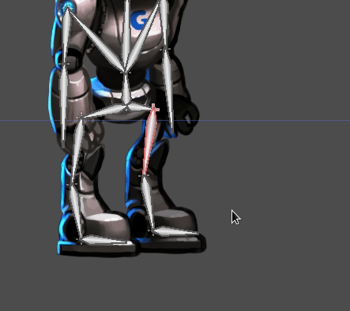
Sau khi vẽ trọng số, việc tạo hoạt ảnh cho các xương (KHÔNG phải các polygon!) sẽ cho hiệu ứng mong muốn là thay đổi và uốn cong polygon tương ứng. Vì với cách này bạn chỉ cần tạo hoạt ảnh cho xương, công việc trở nên dễ dàng hơn nhiều!
Nhưng không phải mọi thứ đều suôn sẻ. Cố tạo hoạt ảnh cho các xương làm uốn cong polygon thường sẽ cho kết quả không như mong đợi:
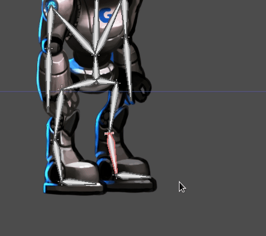
Điều này xảy ra vì Godot tạo ra các tam giác bên trong nối các điểm khi vẽ polygon. Chúng không phải lúc nào cũng uốn cong theo cách bạn mong đợi. Để giải quyết, bạn cần đặt các gợi ý trong hình học để làm rõ cách bạn muốn nó biến dạng.
Đỉnh bên trong
Mở lại menu UV cho từng xương và vào mục Points. Thêm một số đỉnh bên trong ở những vùng bạn muốn hình học uốn cong:

Bây giờ, vào mục Polygon và vẽ lại các polygon của riêng bạn với nhiều chi tiết hơn. Hãy hình dung rằng khi polygon uốn cong, bạn cần đảm bảo chúng biến dạng ít nhất có thể, nên hãy thử nghiệm một chút để tìm ra cách thiết lập phù hợp.

Khi bạn bắt đầu vẽ, polygon gốc sẽ biến mất và bạn có thể tự do tạo polygon của riêng mình:

Mức chi tiết này thường là đủ, dù bạn có thể muốn kiểm soát chi tiết hơn vị trí các tam giác. Hãy tự thử nghiệm cho đến khi đạt được kết quả bạn thích.
Ghi chú: Đừng quên rằng các đỉnh bên trong mới thêm cũng cần được vẽ trọng số! Hãy vào lại mục Bones để gán chúng cho đúng xương.
Khi đã thiết lập xong, bạn sẽ có kết quả tốt hơn nhiều:
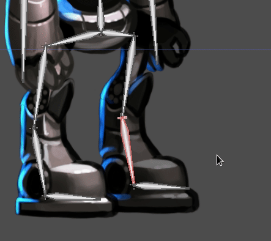